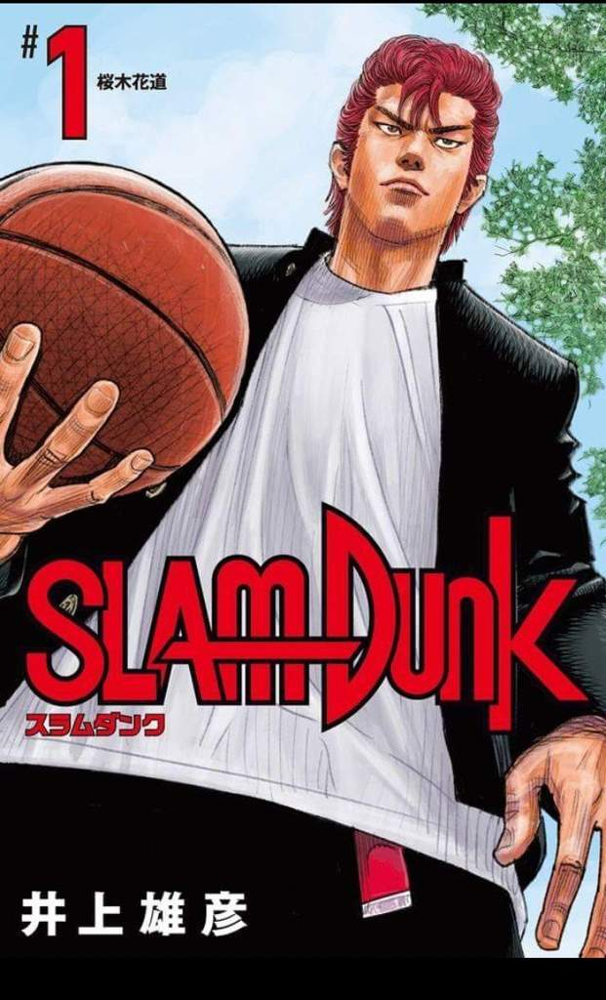

Desde el punto de vista artístico, Slam Dunk presenta una gran calidad que se hace cada vez más patente con el progreso de la historia. El diseño de los personajes está muy bien proporcionado, mientras que los movimientos se expresan con una fluidez y realismo que para muchos superan a los de la propia serie de animación.
Cabe destacar la gran recreación que realiza Takehiko Inoue del baloncesto (deporte del que es fanático desde sus años en la escuela secundaria), transmitiendo siempre el ritmo de un partido real viñeta a viñeta y segundo a segundo mostrándonos absolutamente todo lo que ocurre en la cancha con un grado de precisión y minuciosidad inédito hasta la fecha. Tal es la minuciosidad del autor que todo el manga transcurre en apenas tres meses, desde el comienzo de curso en abril, hasta el verano.
Al igual que otros muchos mangas, Slam Dunk no fue adaptado al anime en su totalidad. Así, su adaptación a este formato solo incluye los 22 primeros volúmenes, dejando inéditos otros nueve, en los que se narra el torneo nacional.
Este manga ostentó durante un tiempo el récord de ventas absoluto para un manga, gracias a sus volúmenes 23 y 24. Este récord le fue arrebatado posteriormente por One Piece. En diciembre de 2004 alcanzó un total de 100 millones de ejemplares vendidos, ocasión que se conmemoró con la publicación de seis ilustraciones a toda página de los protagonistas del manga en los principales diarios de Japón junto con un mensaje de agradecimiento a los lectores.